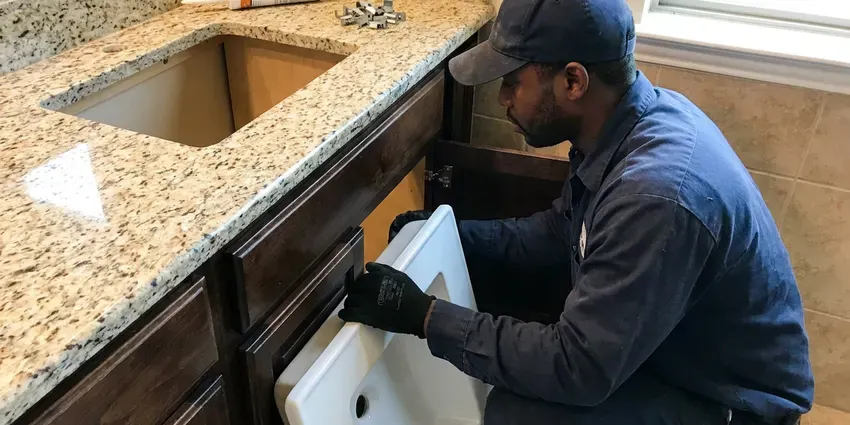

Toilet Repair in Riverton, WY
Slow refill in Riverton, WY? Our plumbers track down the cause and fix it with parts from the truck.
- Insured Plumbers
- Guaranteed Repairs
- Licensed Plumbers
- Most Repairs Under an Hour

Stop the Phantom Refills in Riverton, WY
Shut the angle stop behind the toilet, then call us at (307) 393-4049.
Licensed Toilet Repair Across Riverton, WY
JKV Plumbing handles the small toilet problems that become expensive when they sit, like a tank bolt that weeps or a supply line with a bulge in the braid. Those are cheap parts. We replace them before they fail and flood the room.
Work we handle every week:
- Descale rim jets and siphon holes
- Fill valve, flapper, flush valve and handle rebuilds
- Closet flange repairs for base leaks

Additional Bathroom Plumbing Services in Riverton, WY
From toilets to showers, our bathroom plumbing team in Riverton, WY handles repairs, installs, and upgrades with tidy, code-compliant work.


Customers
Why Choose JKV Plumbing for Toilet Repair in Riverton, WY?
Every truck carries universal and brand-specific parts for Kohler, American Standard, TOTO, Gerber and Glacier Bay. That covers most of what we see. The rare special order tends to come in within two business days, and we leave the toilet usable in the meantime when we can.
- Fast Response, Active leaks go to the front of the schedule.
- Upfront Pricing, You get a flat price before any work begins.
- Leak Testing, Every repair finishes with a dye test and a dry base.
Citywide Coverage
Coverage reaches past the city line into the suburbs and nearby towns around Riverton, WY, with the same flat rate and no extra trip fee for most addresses. Ask when you call. Farther-out homes may get a wider arrival window, but not a higher price.
Experienced Team
Senior plumbers ride along with newer techs on toilet resets until they can set a bowl level on the first try and torque closet bolts without cracking china. That usually takes a few months of supervised work. Nobody works alone until they have done it right many times.
Safety-First Approach
Rotted subflooring is something we show you before going further, since setting a toilet on soft plywood guarantees the seal will fail again. The choice of what to do is yours. A small subfloor patch around the flange is often enough before the toilet goes back down.
Trusted Certified Riverton Plumbing Services Professionals
At JKV Plumbing, we are proud to offer certified plumbing services throughout Riverton, WY. Credentials matter in this trade. Our plumbers hold recognized industry credentials, and they follow strict safety and quality rules on every repair, installation and maintenance call we run.
Call Us Now PHCC Plumbing Contractor Recognition
PHCC Plumbing Contractor Recognition Better Business Bureau (BBB) Accreditation
Better Business Bureau (BBB) Accreditation Angi Certified Pro
Angi Certified Pro ISO 9001 Quality Management Certification
ISO 9001 Quality Management CertificationToilet Repair Work in Riverton, WY
Commercial Toilet Repair in Riverton
Office and retail restrooms take more flushes in a day than a house sees in a month, so the parts wear faster and fail harder. Most commercial toilets use flushometer valves instead of tanks, and those need diaphragm kits and vacuum breakers from time to time. We carry Sloan and Zurn kits. Work can be scheduled before opening or after close.

Flush Mechanism Repair in Riverton, WY
A weak flush usually means the tank is not filling to the fill line, the chain has too much slack, or the flapper is closing before the tank empties. We bring the water up to the line stamped on the overflow tube and adjust the chain to about half an inch of slack. Handles break too. A loose or cracked handle is a five-minute swap.
Leaky Toilet Repair in Riverton
Food coloring in the tank is the cheapest test we run. If color shows up in the bowl within fifteen minutes without a flush, water is leaking past the flapper or the flush valve seat, and the toilet is quietly refilling itself all day and night. Most of the time a new flapper does it, unless the seat under it is pitted or cracked.
Wall-Hung Toilet Repair in Riverton
Restaurant restrooms get the hardest use we see, and wall-hung bowls there can loosen on their carriers until the seal leaks behind the wall. The fix is to tighten or rebuild the carrier, then reseal the bowl. That one needs care. A loose wall-hung bowl can crack the china if it is ignored.
Cracked Tank and Supply Line Repair in Riverton, WY
Braided supply lines last years, but the plastic nut on the toilet end can crack and a bulge in the braid means the inner hose is about to burst. We check every supply line on every visit. Bulges get replaced on the spot. Old vinyl or solid plastic lines get swapped for braided stainless with metal nuts.
Toilet Gasket and Seal Replacement in Riverton, WY
The rubber parts in a toilet, the flapper, the tank-to-bowl gasket, the bolt washers and the wax ring at the floor, all break down with age and chlorine. They get stiff. A stiff gasket stops sealing and lets water seep out slowly where you will not see it until the floor stains. When one tank seal has failed, we replace the full set so the others do not follow next month.
After-Hours Toilet Repair in Riverton, WY
Shutting off the angle stop buys you time, but an old multi-turn stop valve can crumble or leak at the stem when it has not been moved in fifteen years. Do not force it. If it will not close, the main shutoff for the house is the backup, and we can replace the stop with a quarter-turn valve once the water is off.

Sensor and Flushometer Repair in Riverton
Sensor flush valves fail in their own ways, from dead batteries and dirty sensor eyes to solenoids that stick open and keep a bowl running. Before replacing parts, we test the sensor and the solenoid. Batteries are the cheap fix. Ghost flushing on a sensor valve usually means the eye needs adjusting or cleaning.
Toilet Repair Near You in Riverton, WY
Close by matters for toilets. A running tank can wait a day, but a supply line spraying water cannot, and our dispatch puts active leaks in Riverton, WY ahead of routine calls. You get a call when the plumber is about thirty minutes out.
Near-me searches turn up a lot of call centers, and the plumber who arrives may never have seen your neighborhood before that day. We send our own licensed plumbers from Riverton, WY. They explain what failed before starting. You pay the price you approved, nothing added at the end.
JKV Plumbing at a Glance
- Fully licensed plumbing team covering Riverton, WY
- 24/7 emergency service with same-day scheduling
- Upfront, flat-rate pricing before work begins
- 4.9-star rated by 782+ Wyoming customers
Riverton Map
Riverton Information
- Population
- 10,923
- Area codes
- Local
- Service area
- Riverton and towns within a 40 mile drive
- Nearby
- Lander, Rawlins, Casper, Rock Springs
High elevation and strong winds deepen cold snaps, pulling heat from exterior walls and exposed pipes. In a Riverton, WY bathroom, a slow leak at the toilet base can rot the plywood under the tile and feed mold you never see.
Expert Services
Reach out to JKV Plumbing for reliable plumbing work done by licensed pros in Riverton, WY.
Our Specialized Plumbing Services in Riverton, WY
At JKV Plumbing, you get every kind of plumbing service from one company across Riverton, WY. From leak detection to full system installs, our team works fast and charges fair prices on homes and commercial properties alike. Take a look at our core services below:


What to Expect From a Toilet Repair in Riverton, WY
One visit, one price and a toilet that works when we leave in Riverton, WY.
Call or Book Online
Call (307) 393-4049 or use the online form. Describe what the toilet is doing and we set a time window.
Test and Diagnose
The plumber dye-tests the tank and checks the base before naming a cause.
Flat Price
You get a firm price for the repair and approve it before work starts.
Frequently Asked Questions About Toilet Repair in Riverton
Most simple toilet repairs, a new flapper or fill valve, cost about $125 to $275 installed. Pulling and resetting a toilet on a fresh wax ring usually runs $175 to $350, and a flange repair can bring the total to $300 to $500. You approve the flat price before we pick up a tool.
Lift the tank lid and push the flapper down by hand, which stops more water from reaching the bowl right away. Then close the angle stop. It is the small valve on the wall behind the toilet, and it turns clockwise. Once the water is off, a flange plunger can try the clog, and call us if it does not clear.
Yes. Our labor is guaranteed, and the parts we install carry the manufacturer warranty, which varies by brand. If the same problem comes back in the warranty period, we return and fix it.
Kohler, American Standard, TOTO, Gerber, Mansfield and Delta cover most of what we see, and we stock their common flappers and fill valves. Older brands like Eljer and Briggs are fine too. A discontinued model may need a part ordered, which usually takes a day or two.
Calcium and magnesium in hard water crust onto the flush valve seat, the fill valve ports and the rim jets under the bowl lip. The result is slow refills, weak flushes and leaks over time. Descaling helps. Fill valves with simpler, larger ports tend to last longer when the water is hard.
A failed wax ring is the usual cause, often helped along by a toilet that rocks or a flange that has cracked or rusted through. Condensation can fool you, though. In humid weather, water beads on the tank and drips down to the floor, which looks like a base leak but is not one.
Flapper and fill valve jobs take twenty to forty-five minutes. A full pull and reset on a new wax ring takes about an hour, and a flange repair adds another thirty to sixty minutes depending on what is under the floor. Deep clogs take longer.
You can, as long as you match the size, 2 inch or 3 inch, and the flush valve seat underneath is smooth. Turn off the angle stop and flush first. Anything at the base or the flange is a different matter, because a bad reset can rot the subfloor before you notice.
What People Are Saying About Our Plumbing Experts?

Sofia M.
Two new toilets went in during one visit. The tech set them on new wax rings and swapped the old supply lines. He also noticed our bathroom faucet dripping and replaced the cartridge while he was there. No mess left behind.
Toilet Installation · Rock Springs, WY
James P.
Our restaurant had a slow leak at the hand sink that was rotting the cabinet base. JKV Plumbing came in at six in the morning before prep, replaced the trap and both supply lines, and was packed up before my first cook clocked in.
Commercial Plumbing · Riverton, WY
Carlos V.
Our house still had galvanized pipe, and upstairs the shower was a trickle. The crew repiped everything in PEX over three days and patched every drywall hole before they left. The pressure difference is night and day.
Repiping · Casper, WY
Angela D.
Our sump pump quit during a storm and the water was an inch from the basement carpet. JKV Plumbing put in a new pump with a battery backup that same evening. We have had two heavy rains since. It kicked on both times.
Sump Pump · Lander, WYDaniel K.
A pipe burst in the garage ceiling at 11 at night. Someone answered on the second ring, and the plumber was in my driveway about fifty minutes later. He shut off the main, cut out the split section, and had water back on before 2 am.
Emergency Plumbing · Rawlins, WYDiane F.
My kitchen faucet had dripped for months and I finally got tired of hearing it at night. JKV Plumbing came out the next morning, replaced the cartridge and the O rings, and tightened a loose base that was letting water under the sink.
Faucet Repair · Lander, WY